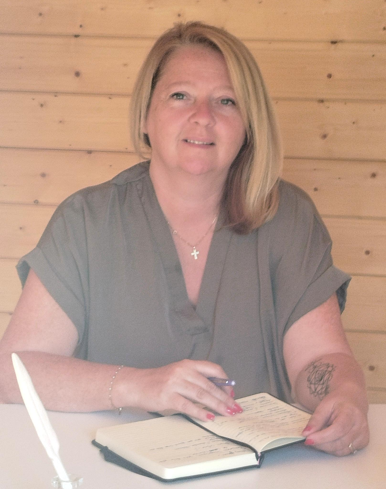

🌿
Stress & anxiété
Retrouver un espace de calme lorsque tout semble devenir trop lourd à porter.
Accompagnement émotionnel à Lorgues
Certaines périodes de vie sont plus difficiles que d'autres. Je vous accueille avec douceur et bienveillance afin de retrouver plus de sérénité, de confiance et d'équilibre intérieur.
Chacun traverse un jour une période où les émotions deviennent plus difficiles à porter. Vous n'avez pas à avancer seul(e).
Retrouver un espace de calme lorsque tout semble devenir trop lourd à porter.
Être accompagné avec douceur dans une étape de vie profondément bouleversante.
Retrouver confiance et avancer à votre rythme.
Lorsque le corps et le cœur ont besoin de souffler.
Retrouver vos ressources intérieures et reprendre confiance en vous.
Traverser une nouvelle étape avec davantage de sérénité.

Je crois profondément que chaque personne possède en elle les ressources nécessaires pour avancer.
Les épreuves de la vie, les émotions, le stress ou les blessures du passé peuvent parfois nous éloigner de cet équilibre intérieur.
Je vous accueille dans un espace chaleureux, à Lorgues, où vous pourrez déposer ce qui vous pèse, être pleinement écouté(e) et avancer à votre rythme.
Mon approche est avant tout humaine. Chaque accompagnement est unique, parce que chaque histoire est différente.
Faire le premier pasJ'ai souhaité créer un lieu chaleureux où vous pourrez prendre le temps de souffler, vous sentir écouté(e) et accueilli(e) avec bienveillance.